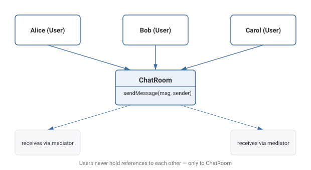

Mediator Pattern
Introduces a central object that routes communication between a group of objects, so they interact through it instead of holding direct references to each other.
Theory
The problem, in plain terms
You're building a group chat feature. If every User object holds direct references to every other User in the room so it can send them messages, adding a fifth user means updating every existing user's list of references, and the number of connections grows quadratically as the room gets bigger. Worse, each User class now has to know about the existence and structure of every other User it talks to — a tangled, tightly-coupled mess where nobody can be changed in isolation.
Mediator introduces a middle object — the ChatRoom — that all users talk to instead of talking to each other directly. A user sends a message to the ChatRoom, and the ChatRoom is responsible for broadcasting it out to every other registered user. Users only need a reference to the mediator, not to each other; the mediator centralizes and owns all the "who talks to whom" logic that would otherwise be scattered across every participant.
How it's built
A Mediator interface (or concrete class, ChatRoom) exposes a method like sendMessage(sender, message) and keeps track of registered Colleague objects (the Users). Each Colleague holds a reference to the mediator (not to other colleagues) and calls the mediator's method to communicate. The mediator's implementation contains the actual routing/broadcasting logic — in a chat room, forwarding a message to every user except the sender; in other contexts, potentially more complex coordination logic between colleagues.
Keep colleagues genuinely ignorant of each other — the moment one colleague reaches around the mediator to talk to another directly, the whole point of the pattern is undermined.
Letting the mediator accumulate unrelated responsibilities over time until it becomes a sprawling "god object" that's hard to change safely.
Where it bites you
Because all the coordination logic accumulates in one place, the mediator can become a large, complex "god object" if the number of colleagues and interaction rules grows significantly — the very complexity that was scattered across many classes is now concentrated in one, and that one class can become hard to maintain. It also means every colleague indirectly depends on the mediator being available and correctly wired, so testing a colleague in isolation typically requires a mock mediator.
Diagram

When to Use
- A group of objects needs to communicate, and direct references between them would create a tangled, quadratically-growing web of dependencies.
- You want to centralize interaction/coordination logic in one place instead of scattering it across every participant.
- You want to add or remove participants without updating every existing participant's references.
- Only two objects need to communicate — a direct reference is simpler than routing through a middleman.
- The coordination logic is genuinely simple and unlikely to grow — a Mediator can add more indirection than the problem calls for.
What interviewers are actually listening for: recognizing the trade-off explicitly — Mediator reduces many-to-many coupling between colleagues at the cost of concentrating complexity into a single mediator object, which can itself become a maintenance burden if it grows unchecked. Also, distinguishing Mediator from Observer — Mediator actively coordinates and can contain business logic about how colleagues interact, while Observer is a simpler one-directional broadcast with no coordination logic between the observers themselves.
Real-World Examples
- Chat rooms / group messaging — a chat room object routes messages between participants instead of each user holding direct references to every other user.
- Air traffic control — the control tower (mediator) coordinates aircraft (colleagues) so planes don't need to communicate directly with every other plane.
- GUI dialog/form coordination — a dialog controller mediates between form fields and buttons, rather than each field needing direct references to every other field.
- Message brokers / event buses (RabbitMQ, Kafka) — publishers and subscribers interact through a broker rather than directly with each other.
- Workflow orchestrators — a central orchestrator coordinates calls between multiple microservices, rather than each service calling every other service directly.
Interview Questions
Click a question to reveal the answer.
What problem does Mediator solve?
It replaces a web of direct many-to-many references between communicating objects with a single central object that routes communication between them. Instead of every object needing references to every other object it talks to, each one only needs a reference to the mediator.
What's the risk of using Mediator, and when does it show up?
The mediator can turn into a "god object" — since all the coordination logic that used to be scattered across many colleague classes is now concentrated in one place, that one class can grow large and complex as the number of colleagues and interaction rules increases, becoming a maintenance burden itself.
How is Mediator different from Observer?
Observer is a simpler, typically one-directional broadcast: a Subject notifies Observers of a state change, and Observers don't coordinate with each other through the Subject. Mediator actively coordinates interaction between multiple Colleague objects and can contain real business logic about how those colleagues should interact with each other, not just a notification broadcast.
Why does using a Mediator make unit testing individual colleagues easier?
Because each colleague only depends on the mediator interface rather than on every other concrete colleague it might interact with, you can test a colleague in isolation by supplying a mock/stub mediator, rather than needing to construct a whole web of real interconnected objects just to exercise one piece.
Code & Output
Same pattern, four languages. Every output shown here was captured from a real run — note each message reaches every user except the sender.